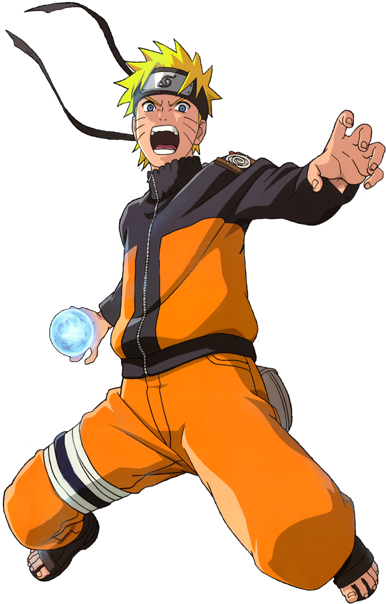

Naruto

Naruto Uzumaki es un ninja de la Aldea de la Hoja que sueña con convertirse en Hokage. Es alegre, impulsivo y perseverante. A pesar de haber sufrido rechazo durante su infancia, nunca abandona sus sueños. Su gran determinación, amistad y espíritu de superación lo convierten en uno de los ninjas más poderosos